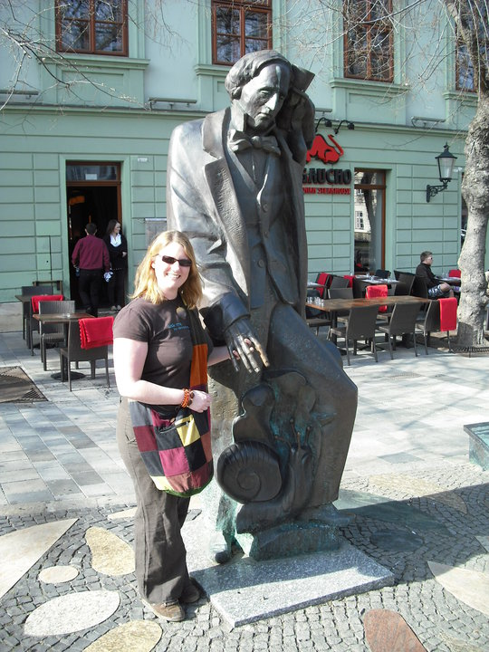
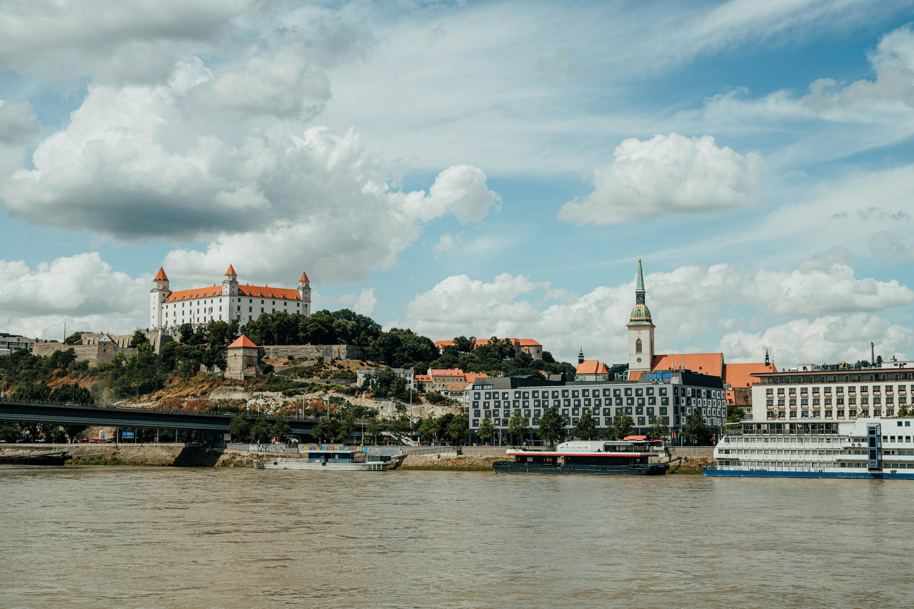
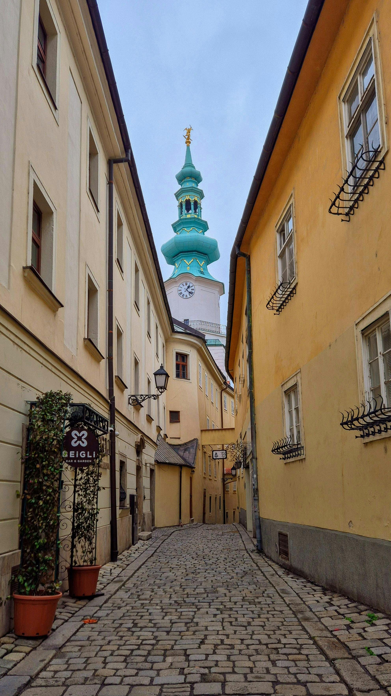
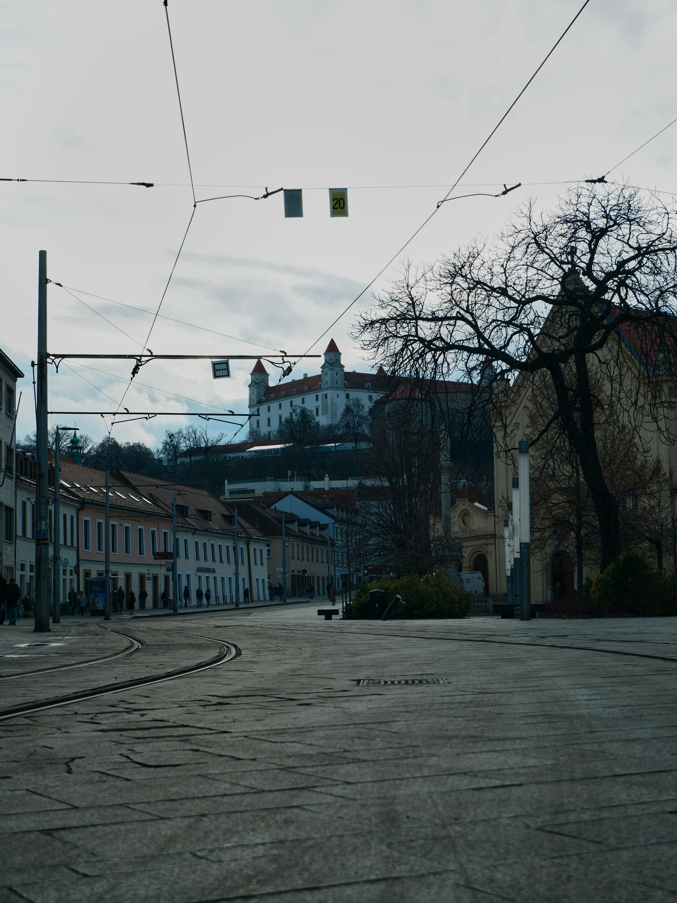

Back in 2010, a day trip from Vienna to Bratislava felt like one of the great little European travel hacks. You could leave polished, elegant Austria on an early coach and be in another capital city — and another country — in about an hour. Bratislava felt smaller, cheaper, rougher around the edges and much less polished than Vienna. And that was exactly what made it memorable: cobbled streets, a big white castle over the Danube, quirky statues, cheap beer, hearty Slovak food and that unmistakable post-Communist East-meets-West atmosphere.




A Vienna to Bratislava day trip was incredibly popular around 2010 because it was cheap, easy and had that wonderful novelty of crossing into a different country for the day. This was before every city break was documented to death online, so Bratislava still felt like a bit of a discovery — especially if you had just come from Vienna's polished boulevards, palaces and cafés.
Once we arrived, we mostly stayed around the compact Old Town, which is exactly what makes Bratislava so easy as a day trip. You do not need a complicated itinerary. You wander, look up at the towers, stop for coffee or beer, find the funny statues, walk up to the castle, take in the Danube views and suddenly the day is gone.
What stood out most was the contrast. Bratislava felt quieter and less polished than Austria. There were old trams, Soviet-style apartment blocks beyond the centre, cheaper prices and a sense that the city was still sitting between East and West. People often called it Vienna's rough-around-the-edges cousin — and honestly, that was half the charm.
Bratislava's Old Town is compact, charming and ridiculously easy to explore in a few hours. It does not have the grandeur of Vienna or Prague, but it has its own smaller-scale charm: pastel façades, cobbled lanes, cafés spilling into squares, old churches and a slightly sleepy feeling that makes it perfect for wandering.
Michael's Gate is one of Bratislava's most recognisable landmarks — a medieval tower and the only preserved city gate from the old fortifications. Walking under it felt like the proper entrance into old Bratislava.
The heart of the Old Town, surrounded by historic buildings, cafés and the kind of central-European atmosphere that makes you want to sit down with a coffee and people-watch for far too long.
A beautiful neoclassical palace in the Old Town, known for its elegant pink façade and Hall of Mirrors. Even from the outside, it adds a very grand note to the otherwise compact city centre.
One of the most important churches in Bratislava and historically the coronation church of Hungarian kings. It sits below the castle and gives the city that strong Central European history feel.
Bratislava Castle is the image everyone remembers: a huge white rectangular castle sitting high above the city, looking down over the Danube. We walked uphill to it for the views, and it was absolutely worth the effort.
On a clear day, the views stretch towards Austria and Hungary, which is what makes Bratislava feel so unusual. It is not just another city break — it is a capital city squeezed between borders, histories and cultures. That is what gave the day trip such a sense of place.
The walk up also gives you a brilliant perspective on the contrast between the pretty Old Town below, the Danube cutting through the city and the more Communist-era apartment blocks and newer districts beyond the centre.
Bratislava's street statues were a massive part of the tourist experience back then. They gave the city a bit of humour and personality, and everyone seemed to be wandering around trying to find them.
The famous man peeking out of the sewer. Probably the most photographed thing in Bratislava after the castle. A completely random little statue that somehow became a symbol of the city.
The elegant gentleman tipping his hat in the Old Town. Sweet, old-fashioned and very Bratislava — the kind of statue you only really appreciate when you stumble across it.
In 2010, Bratislava still had a very visible East-meets-West atmosphere. The Old Town was pretty and walkable, but outside the centre you could still see Soviet-era apartment blocks, older trams and a quieter, less polished version of Europe.
That contrast was part of why the day trip worked so well. Vienna was grand, expensive and immaculate. Bratislava was cheaper, smaller, rougher around the edges and more surprising. It was the kind of place where you could feel history layered into the streets without needing every building to be postcard-perfect.
Beyond the classic Old Town and castle route, two other Bratislava sights stuck out: the Blue Church and the Most SNP, better known as the UFO Bridge.
One of the prettiest and most unusual churches in Europe — pastel blue, delicate and almost fairytale-like. It is incredibly photogenic and very different from the heavier medieval feel of the Old Town.
The bridge across the Danube with a UFO-shaped observation deck on top. It gives Bratislava that odd futuristic edge beside all the medieval streets and older Communist-era architecture.
One of the big memories from Bratislava was how cheap everything felt compared to Vienna. We sat around cafés in the Old Town, had massive beers and ate the kind of hearty Central European food that is exactly what you want after a day of walking.
Rich, warming and exactly the kind of thing tourists expected from Central Europe.
Often served in bread bowls — iconic, filling and very memorable.
Heavy, hearty and perfect with meat dishes and sauces.
Slovak food loves potatoes, and frankly so do we.
Not uniquely Slovak, but very common and very welcome after sightseeing.
The thing everyone remembers from Bratislava in 2010: huge beers that felt shockingly cheap after Vienna.
One early coach, about an hour on the road, and suddenly you are in another capital city. That novelty never gets old.
The Old Town is compact enough to explore without stress, making it perfect for a few hours rather than a full city break.
The walk up to Bratislava Castle gives you the Danube, Austria, Hungary and the whole shape of the city in one panorama.
Čumil, Schöne Náci, the UFO Bridge and the Blue Church gave the city a playful side that people really remembered.
Food and drink felt noticeably cheaper than Vienna, which made the day trip even more appealing.
It was not as polished as Vienna — and that made it feel more adventurous, more surprising and more memorable.
Bratislava works brilliantly as part of a wider Central Europe route — Vienna, Bratislava, Budapest and Prague all combine beautifully if you want an easy multi-country trip.
Disclosure: This is an affiliate link. If you book through it we may earn a small commission at no extra cost to you.
Walking tours, food tours, castle visits, Danube experiences and day trips — Bratislava is easy to explore independently, but a good guided tour gives the city much more context.
Disclosure: If you book through this link we may earn a small commission at no extra cost to you.
We only visited as a day trip, but Bratislava would also work as an overnight stop between Vienna and Budapest if you want a slower Central Europe route.
Disclosure: This is an affiliate link. If you book through it we may earn a small commission at no extra cost to you.
Common questions
What to pack for Bratislava
For a Vienna to Bratislava day trip, keep it light. You need comfortable shoes, a charged phone, a small bag and layers for walking up to the castle and wandering the Old Town.
Perfect for a day trip from Vienna — room for water, jacket, snacks and souvenirs without dragging a suitcase around cobbled streets.
View on Amazon →You will use your phone constantly for maps, photos, bus tickets and translating menus. A power bank saves the day.
View on Amazon →Bratislava is compact but cobbled, and the castle walk is uphill. Do not do it in silly shoes.
View on Amazon →Central European weather can change quickly. A light waterproof layer is ideal for a full day out.
View on Amazon →Slovakia uses European two-pin plugs. Handy if you are charging devices in cafés, hotels or on a longer Central Europe trip.
View on Amazon →Useful for crossing borders, navigating and checking bus times without worrying about data roaming.
View on Amazon →Disclosure: These are Amazon affiliate links. If you buy through them we may earn a small commission at no extra cost to you.
Bratislava works brilliantly with Vienna, Budapest and Prague as part of a wider Central Europe route.
Thermal baths, ruin bars, Danube views and grand old Central European drama.
Read the Budapest guide →A fairytale medieval city of bridges, towers and cobbled streets.
Read the Prague guide →Medieval Old Town, Trakai Island Castle and a Lithuanian wedding I'll never forget.
Read the Lithuania guide →Take the early bus from Vienna, wander the Old Town, climb up to Bratislava Castle, find Čumil, stop for garlic soup and a giant beer, and enjoy one of Europe's easiest little cross-border adventures.
Affiliate disclosure: if you book through our links we may earn a small commission at no cost to you. We only recommend experiences we would genuinely consider ourselves.